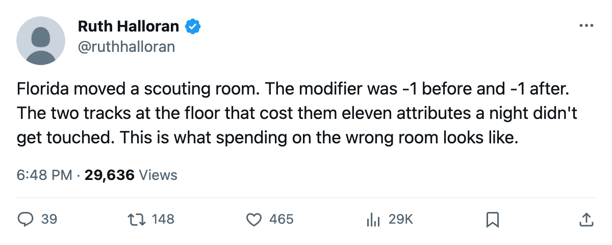
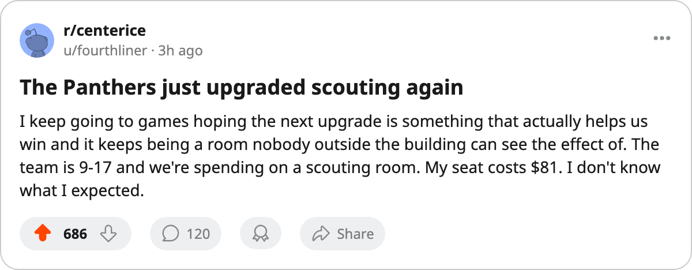

FLA
FLAA Scouting Room Went Up at Florida. The Modifier Stayed at Minus One.
The third facility move in 12 months at [[team:FLA]] changed a number that nothing in this build reads
 Ruth HalloranBusiness of hockey · The Building
Ruth HalloranBusiness of hockey · The Building
Florida moved its scouting room from level 1 to level 2 between December 22 and December 24. The tuning file gives scouting a modifier of -1 at level 1 and -1 at level 2. Nothing in this pipeline reads the scouting track anyway: it feeds only the trade valuation, which is a number nobody outside a club can see.
This is the third facility upgrade filed at Florida in 12 months. Practice moved from 0 to 1 in the May wave, scouting moved from 1 to 2 at the same time, and now scouting moves to 2 again from 1. The two moves in May were part of a 28-club sweep the league ran in a single night. This one is solo.
What has not moved are the four tracks that shift a rating. Equipment sits at level 0, which carries -6. Workout sits at level 0, which carries -5. Practice is at level 1, which carries -4. Travel is at level 3, which carries -1. The live sum is -16. Two of those four tracks are at the league floor and have been since the record opened.
| track | level | modifier | moved since May |
|---|---|---|---|
| equipment | 0 | -6 | no |
| workout | 0 | -5 | no |
| practice | 1 | -4 | yes (0 to 1, May) |
| travel | 3 | -1 | no |
Florida's on-the-ice penalty, averaged across its own roster, is -3.29. That is the third-worst reading in the league, ahead of only  New York Islanders at -3.61 and
New York Islanders at -3.61 and  Boston Bruins at -3.59. The Panthers are 9-17-3 with 29 points, home 7-9, road 6-11. Their payroll is $57.60M against a per-point figure of $1.99M, which puts them near the bottom of the efficiency table. Revenue is $50.38M, profit $19.73M, attendance 14,806, ticket $81.
Boston Bruins at -3.59. The Panthers are 9-17-3 with 29 points, home 7-9, road 6-11. Their payroll is $57.60M against a per-point figure of $1.99M, which puts them near the bottom of the efficiency table. Revenue is $50.38M, profit $19.73M, attendance 14,806, ticket $81.
The league also filed a prestige move at Florida this edition: Boris Van Ryswyk's standing went up 12 points, the largest single jump in the league. Every other general manager moved by 2 or stayed level. The league keeps prestige as a raw standing and does not record how it moved, so the desk has the figure and not the cause.
Van Ryswyk sits 28th out of 30 on the prestige table at 568. His record this season is 9-17-3, 27 points from 29 games as the GM record reports it. Experience is 23,075,361.
The Building has reported this pattern before: upgrades to rooms that carry no live modifier, and the four tracks that shift attributes left at the floor. Columbus filed three upgrades between February and December; its equipment and practice tracks remain at 0. Montreal moved its equipment room in November; its travel track is still at 0 and costs 6 attributes a night on the road. Florida joins them now with a scouting room at level 2 and the same two dead tracks at level 0 they had before.
The upgrade record has held since the first of December. In those 24 days, five moves have been filed. Three of them (Florida scouting, Colorado scouting, Nashville scouting) hit the same room that feeds only the trade valuation. Two (Montreal equipment, Nashville scouting) hit rooms where at least one carries a modifier that changes between adjacent levels.
Florida's live sum of -16 puts it in a group of four clubs at that reading:  Atlanta Thrashers,
Atlanta Thrashers,  Phoenix Coyotes,
Phoenix Coyotes,  St. Louis Blues, and Florida itself. Only one of those four, St. Louis, is above .500. The others are 9-18-3, 10-19-2, and 9-17-3.
St. Louis Blues, and Florida itself. Only one of those four, St. Louis, is above .500. The others are 9-18-3, 10-19-2, and 9-17-3.
Florida moved a room from level 1 to level 2 for a modifier that does not change. The $57.60M payroll still sits against 29 points, and the -6 and -5 still cost 11 attributes a night before any other factor is applied.

